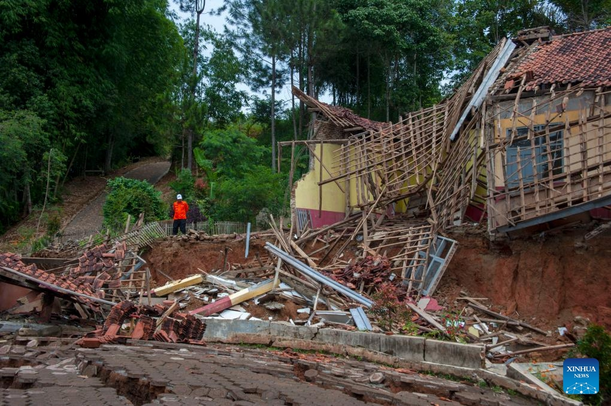

Pendidikan dan Pengajaran
Mempelajari dan mendalami fenomena land subsidence dan tanah longsor secara keilmuan geodesi dan geomatika.
Gerakan membangun kesadaran dan kesiapsiagaan masyarakat. Karena setiap tindakan, sekecil apa pun, akan berdampak besar bagi keselamatan kita bersama
Cekungan Bandung menghadapi salah satu persoalan lingkungan yang kerap luput dari perhatian: penurunan muka tanah (land subsidence). Fenomena ini bukan sekadar perubahan permukaan tanah secara alami, tetapi ancaman yang berlangsung perlahan dan dapat memberikan dampak besar terhadap kehidupan masyarakat.
Beberapa wilayah di Cekungan Bandung mengalami penurunan muka tanah dengan laju rata-rata sekitar 8 cm per tahun, bahkan ada yang mencapai 23 cm per tahun. Jika terus berlangsung, penurunan muka tanah dapat meningkatkan kerentanan wilayah terhadap berbagai permasalahan lingkungan, bencana lain, serta kerugian ekonomi.
Land subsidence perlu dipandang sebagai silent disaster, yaitu ancaman yang berkembang secara perlahan tetapi berpotensi memberikan dampak jangka panjang terhadap keberlanjutan dan keselamatan masyarakat Cekungan Bandung.
Karena itu, Teknik Geodesi dan Geomatika ITB ’25 hadir melalui aksi angkatan RAKSHABENA '26 sebagai bentuk kepedulian dan kontribusi dalam meningkatkan pemahaman masyarakat terhadap isu penurunan muka tanah. Melalui kegiatan ini, kami berupaya menghubungkan keilmuan geodesi dan geomatika dengan kebutuhan masyarakat, sekaligus mewujudkan peran mahasiswa dalam Tridharma Perguruan Tinggi.

Bangunan rusak akibat penurunan muka tanah di Desa Cibedug, Kabupaten Bandung Barat, Jawa Barat, Indonesia, pada 4 Maret 2024. (Foto: Xinhua)
Mempelajari dan mendalami fenomena land subsidence dan tanah longsor secara keilmuan geodesi dan geomatika.
Memanfaatkan keilmuan geodesi dan geomatika untuk memetakan wilayah rawan serta mengidentifikasi potensi bahaya sebagai dasar mitigasi.
Mengubah pengetahuan menjadi aksi nyata melalui pemetaan, edukasi, dan pemberdayaan masyarakat demi menciptakan lingkungan yang lebih aman dan tangguh.
Aksi Angkatan ini bertemakan The Butterfly Effect: Setiap Tindakan Akan Berdampak dengan nama acara yaitu Rakshabena. Melalui tema ini, Aksi Angkatan diarahkan agar setiap individu, dengan berbekal keilmuan geodesi, dapat mengambil peran sebagai pelopor mitigasi, serta membangun kesadaran bahwa tindakan sekecil apa pun akan memicu dampak besar bagi keselamatan dan kebaikan bersama.
Meningkatkan pengetahuan siswa sekolah dan masyarakat di area kajian mengenai fenomena land subsidence dan perannya dengan potensi bencana longsor.
Menumbuhkan kesadaran siswa sekolah dan masyarakat di area kajian terhadap risiko land subsidence dan longsor melalui kampanye edukatif.
Meningkatkan kesiapsiagaan masyarakat terhadap potensi longsor melalui pemasangan tanda peringatan di area-area rawan longsor.
Aksi angkatan akan dilaksankan pada tanggal 28-29 Agustus 2026, mencakup beberapa kegiatan seperti di bawah ini
Kegiatan KEPAK berfokus pada sesi pemaparan materi yang informatif dan komprehensif untuk memperluas wawasan siswa sekolah di area kajian.
Sesi KIMPUL menghadirkan pemaparan visualisasi peta, titik area beresiko longsor, lengkap dengan sesi tanya jawab (QnA) interaktif.
Program REAKSI mengajak peserta untuk aktif dan bergembira melalui tiga sesi permainan (Games) yang seru dan membangun kekompakan.
Merupakan kegiatan pemaparan materi guna mengedukasi masyarakat umum secara langsung.
Rangkaian acara GEMPITA berisi pemaparan materi, sesi QnA, simulasi evakuasi, bagi masyarakat di area kajian.
Geodesi berperan penting dalam fenomena ini untuk terus memantau pergerakan tanah yang terjadi, sehingga dapat diambil langkah mitigasi yang tepat
Teknik Geodesi dan Geomatika berperan dalam memantau penurunan muka tanah melalui berbagai teknologi geospasial. Survei GNSS/GPS digunakan untuk mengukur perubahan posisi vertikal titik pantau secara berkala, sementara InSAR memanfaatkan citra radar satelit untuk mendeteksi deformasi permukaan tanah dalam cakupan wilayah yang luas.
Kedua metode tersebut dapat diintegrasikan untuk menghasilkan informasi pergerakan tanah yang lebih akurat dan menyeluruh. Selanjutnya, Sistem Informasi Geografis (SIG) digunakan untuk mengolah dan menganalisis informasi spasial, termasuk pemetaan risiko, identifikasi wilayah terdampak, serta mendukung upaya mitigasi dan penanggulangan bencana.
Cekungan Bandung, khususnya kawasan Bandung Selatan, merupakan salah satu wilayah yang mengalami penurunan muka tanah dengan intensitas yang beragam. Hasil pengukuran GNSS pada periode 2016–2023 menunjukkan laju penurunan sekitar 1,4–13 cm per tahun, sementara pengukuran InSAR mencatat laju sekitar 0,6–12 cm per tahun. Kondisi ini tidak terlepas dari karakteristik geologi Cekungan Bandung yang didominasi endapan aluvium dan lempung lunak, sehingga permukaan tanah relatif mudah mengalami kompresi.
Fenomena tersebut juga dipengaruhi oleh aktivitas manusia, terutama pengambilan air tanah, perkembangan kawasan perkotaan, pembangunan, dan perubahan tutupan lahan. Secara historis, beberapa wilayah seperti Cimahi, Dayeuhkolot, dan Rancaekek bahkan tercatat mengalami penurunan hingga sekitar 12–24 cm per tahun. Kondisi ini menunjukkan bahwa penurunan muka tanah bukan fenomena yang seragam, melainkan memiliki pola dan tingkat intensitas berbeda di setiap wilayah, sehingga pemantauan berkelanjutan menjadi penting untuk mendukung mitigasi dan perencanaan wilayah.
Selain menjadi persoalan tersendiri, fenomena penurunan muka tanah juga dapat menjadi salah satu faktor yang berkontribusi terhadap tingkat risiko longsor di suatu wilayah. Bersama dengan faktor lain seperti kelerengan, tutupan lahan, curah hujan, dan kondisi litologi, perubahan dan deformasi permukaan tanah dapat memengaruhi kestabilan lereng serta tingkat kerentanan suatu kawasan terhadap longsor.
Berikut adalah peta mengenai tingkat risiko longsor di Kecamatan Baleendah berdasarkan beberapa faktor, yakni kelerengan, tutupan lahan, curah hujan, dan kondisi litologi.
Sebagai panduan arah gerak RAKSHABENA 26, Visi dan Misi ini disusun agar seluruh rangkaian kegiatan yang dilaksanakan dapat memberikan manfaat yang nyata dan berkelanjutan bagi masyarakat.
Terwujudnya Teknik Geodesi dan Geomatika ITB 2025 sebagai kesatuan angkatan yang dapat memberi kontribusi nyata melalui wadah pengabdian masyarakat berbasis keilmuan Teknik Geodesi dan Geomatika demi perwujudan amanat konstitusional mahasiswa dan kesejahteraan masyarakat.
Menginternalisasi Tanggung Jawab Konstitusional dan Orientasi Keilmuan untuk Keberlanjutan Bangsa.
Mewujudkan Pelaksanaan Tridharma Perguruan Tinggi secara Seimbang melalui Pengabdian Masyarakat.
Mengorganisasi Peran Agent of Change melalui Wadah Aksi Angkatan Berbasis Keilmuan.
Struktur kepanitiaan ini dibentuk untuk memastikan seluruh elemen aksi angkatan berjalan dengan terkoordinasi, efisien, dan efektif dalam mencapai tujuan RAKSHABENA 26.
Dokumentasi dan rekap rangkaian kegiatan aksi angkatan yang dilaksanakan pada tanggal 28-29 Agustus 2026